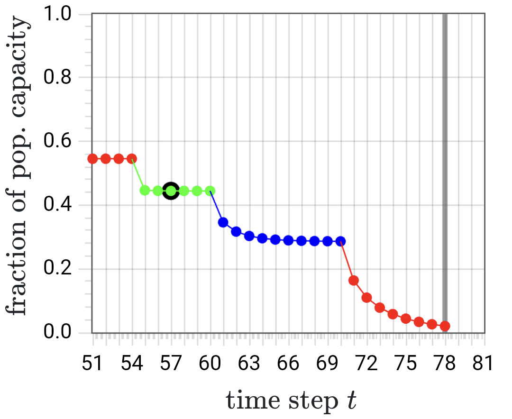
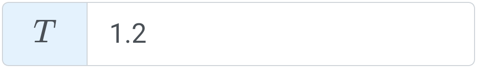
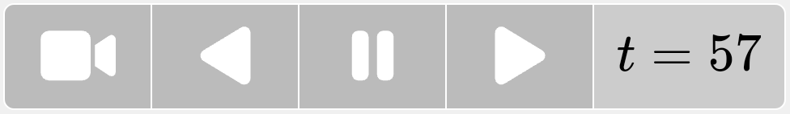
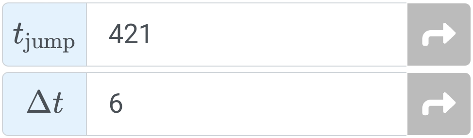
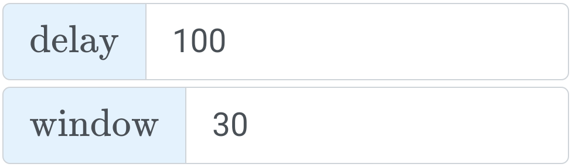
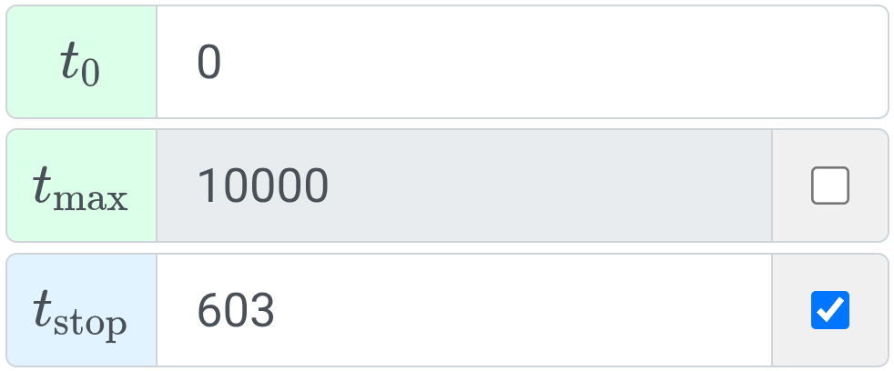
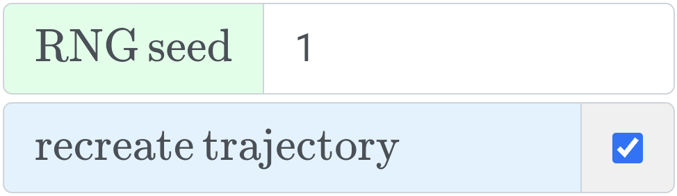
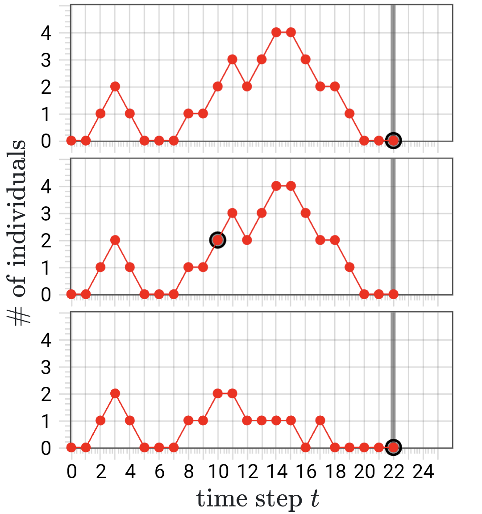
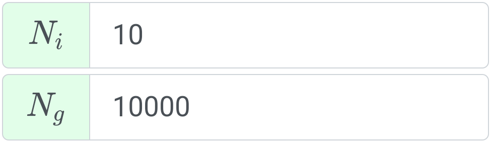

SSNS, which stands for Simple, Stochastic and Nonlinear Simulator, is a web app that offers interactive exploration of examples from various STEM fields. Welcome!
Quick Start: press above and then
The above represents the top of the help viewer hierarchy. Within-help links are in this blue. Outbound links (mostly to Wikipedia) are in this blue. The hierarchy branches from here:
If words like stochasticity and nonlinearity are unfamiliar to you, no problem. This app aims to be accessible! If, on the other hand, you are a guru, hopefully some interactive exploration proves enjoyable — like seeing an old friend.
At right is a screenshot of SSNS in action. The plot area occupies the upper part of the screen. Below that is the main panel which contains one button bar with continuous-action navigation commands and another with 3 toggle-able dropdown areas: CTRL , PRMS , and SYS .
The SSNS app is like an audio recorder in that playback can only occur after some data is recorded. In the screenshot, the currently loaded system type is $$ \texttt{LM} $$, 12 time steps have been recorded, and the current time is $$t = 9$$.
SSNS has four different plot types, each filling a different visualization "niche." The plot type (the app's "flagship") is great for exploring time-dependent behavior like the approach to a steady or equilibrium state. Here it is in action:
The black circle follows the current time ($$t = 57$$, here) and matches the main panel's time indicator. The grey vertical band (at $$78$$, here) indicates $$ t_{\mathrm{edge}} $$, the end of the recorded trajectory ($$ t_{\mathrm{edge}} \le \; $$$$ t_{\mathrm{max}} $$). SSNS trajectories are sequences of $$\texttt{TrajSeg}$$ objects. A change of parameter values generates a new $$\texttt{TrajSeg}$$ segment and cycles the plot color. The screenshot above shows 4 of them: red, green, blue, and red again.
The SSNS main panel contains two button bars. The first contains the continuous-action commands with the (non-clickable) time-step indicator on the right. The second bar's buttons are, from left to right: CTRL for general inputs, PRMS for system-type-specific inputs, SYS for choosing the system type, and for this help viewer.
SSNS uses JavaScript and the Bootstrap library to adapt the app interface to different screen widths across devices. "Responsive" behaviors include:
- main panel button bars stack on mobile, but spread horizontally on desktop
- same for controls in each dropdown area
- dropdown buttons on mobile show icons (e.g., ) but not labels (e.g., PRMS)
- one dropdown shown at once on mobile
- random number settings only present if the system is stochastic
- ensemble settings only present for stochastic processes
When a system type is selected, its parameters populate the PRMS dropdown area. A parameter could be, say, a mutation rate in a biological model, or temperature in a physical model, like so:
The input field has the current value ($$1.2$$, here) and, on the left, the parameter's symbol ($$T$$) on a colored background. The color indicates when a changed value takes effect — blue: immediately, or at next recorded step; green: a reload is needed. Any of the colored symbol backgrounds in the PRMS and CTRL dropdown areas can be clicked to view the corresponding quantity's help page.
On load, each input field in the app has a sensible default value. Further, JavaScript $$\texttt{onChange}$$ listeners and a layer of SSNS $$\texttt{UINI}$$ objects mean out-of-range values will never reach the $$\texttt{Trajectory}$$ machinery.
Use the SYS dropdown area to select an SSNS system type. There are two sets of radio buttons: one orange, one yellow. Upon selecting a STEM category in the orange one, the yellow one updates to show the system types from that category. The four categories are described here.
Each yellow system type entry gives both the name (e.g., Logistic Map) and a two-letter abbreviation ($$ \texttt{LM} $$). Since the SYS dropdown may be collapsed, its button always displays the abbreviation of the currently loaded system type for reference ().
When a system type selection is made, the plot area updates to show the corresponding trajectory. Previously recorded trajectory data and choice of plot type are "remembered" from previous exploration. Such stored data can always be erased by reloading.
This help viewer is a hierarchical network of pages that "floats" above the SSNS interface. The top of the hierarchy is represented by ("home"). All other pages have names, e.g., Computation. The current page's name is boxed in the breadcrumbs above to show its place in the hierarchy.
Navigation within the help viewer is done via light blue links. They are present in page text, the breadcrumbs, and a rudimentary back button . External links (usually to Wikipedia) are in this shade of blue.
Launching the help viewer with shows the last displayed page. Alternatively, clicking a colored symbol background in the CTRL or PRMS dropdown areas opens the corresponding quantity's page. The viewer can always be closed with . Also, if viewing the page for a system type, click the next to its name to close the viewer and load it in the main interface.SSNS code and computation are described in detail in the GitHub README . These help viewer pages touch on many of the same topics, but at a less technical level.
- code design, and why JavaScript was the language for the job
- how the code is organized using design ideas like encapsulation
- external libraries that SSNS relies on for things like user interface
- how the code accommodates invalid user input and tries to minimize interrupting with error messages
- future additions/improvements: system types to try, and taking full advantage of the GPU
Here are a few of the factors considered in designing SSNS. (Details on GitHub .)
The SSNS app would need to live on the web and have a quick turnaround: from user input, to computation, to plot output. Considering these requirements, the JavaScript language, plus supporting libraries, was the natural choice.
In the SSNS code, a $$\texttt{Trajectory}$$ object contains everything needed to generate output (via discrete-time update equations) and store it for playback. Its composition from "smaller" classes and specialization for each system type are discussed here.
There are perks to being a client-side web app like SSNS. For one, there's nothing to install or update! Also, for those interested learning more, source can be viewed right in the browser, and execution info can be viewed in the developer tools console.
The collection of all SSNS system types can be grouped in many different ways — think of Venn diagrams. This suggests the use of classes and inheritance in structuring the SSNS code. Here is the inheritance hierarchy for the $$\texttt{Trajectory}$$ class:

Similar hierarchies exist for the $$\texttt{Params}$$, $$\texttt{Coords}$$, $$\texttt{ModelCalc}$$, and $$\texttt{PlotType}$$ classes.
We can also consider class composition. Each $$\texttt{Trajectory}$$ is composed of a $$\texttt{ModelCalc}$$ object (to perform all system-type-specific calculations) and one or more $$\texttt{TrajSeg}$$ objects. A $$\texttt{TrajSeg}$$ represents the segment of a trajectory evolved with a specific set of parameters values. It contains a single $$\texttt{Params}$$ and one or more $$\texttt{Coords}$$ objects, as shown here:

Finally, each $$\texttt{Coords}$$ object holds all dependent variable data for a single time step — it could be, e.g., a single scalar value, or a large 2D matrix of values. See GitHub for more class diagrams, abbreviation info, etc.
SSNS library dependencies include:
- stdlib.js for data structures, statistics, and random number generation
- flot for plotting (except for heatmaps, which use HTML <canvas>)
- Bootstrap for a responsive interface
- KaTeX for web typesetting
- jQuery for interacting with the DOM
- Font Awesome for nifty icons
See GitHub for more info and related CSS stylesheet files. There is also a minified bundle of the above JavaScript dependencies. The head of that file contains version info.
The user interface, or "UI," facilitates all forms of interaction with the app, including:
- plot output, discussed, e.g., here
- indicator output, e.g., of $$t$$ value
- button input, discussed e.g., here
- numerical input, via input fields; each is managed by a $$\texttt{UINI}$$ object which stores an "official" value; input from the UI is validated, and sometimes autocorrected; during "playback," TrajSeg values flow to the UI; see GitHub for details
- handling of error conditions; good design hopefully prevents most; INFO messages are sent to the JavaScript console; limitless recording, however, is not possible, so we intervene
Saving of $$\texttt{Trajectory}$$ data is not implemented. However, the project is open, so someone might add it! Screenshots are always allowed, of course 😃.
Here is a sample of the SSNS future items to address/explore list on GitHub :
- System types that are disabled in the SYS dropdown are either under maintenance or not yet written. The planned fluids systems EU and PF will require a bit of work — not quite as simple as GM! 😉
- The Coords memory footprint for most system types is tiny, the main exception being the spin systems. One easy improvement would be to adapt $$ N_{\mathrm{max}} $$ based on $$ t_{\mathrm{max}} $$, so that larger grids are allowed for shorter trajectories, and vice versa. Alternatively, we could refactor to avoid storing the entire spin array at each time step. See gh .
- When it comes to XY models, ours pales in comparison to this one 🤯. One reason is that SSNS does not use the GPU for non-graphical computation. Code must be adapted for GPGPU, but the performance gains can be huge.
Maximum Duration Reached
The maximum trajectory duration has been reached. Consider rewinding and re-recording. You can also try increasing the $$ t_{\mathrm{max}} $$ parameter, but be aware that it has a system-type-dependent internal limit. See this discussion for more.
Not Implemented
This SSNS page/functionality is not yet written/implemented. The GitHub may have more information.
The SYS dropdown area organizes the system types implemented by SSNS into four categories. Each category has a page with a brief description of its central ideas:
There are also a few supplemental pages that go a bit deeper, or cross categories:
- a bit on statistical ensembles, relevant to the first two categories
- a bit on the various types of stochastic processes
- a bit on spin systems, of which system types Ising and XY are examples
- a bit on phase transitions (part of statistical mechanics, and relevant to those same two spin systems)
Of the four categories of Simple Stochastic and Nonlinear systems we Simulate, stochastic processes and statistical mechanics represent a stochastic meta-category, while nonlinear and fluid dynamics represent a nonlinear meta-category. In the former, system types generally depend on random numbers; in the latter, they do not. For the former, "ensemble" refers to a number of independently evolved copies of the system type, across which statistics can be calculated. Regarding ensembles:
- SSNS SP machinery supports large ensembles, as described here
- for SSNS SM systems, ensemble size is $$1$$, but averaging over time (or, say, across a large lattice) is always possible
- as in all stochastic simulation, care must be taken with the seeding of RNG's, assessment of correlations, the determination of steady state, etc.
If the evolution of a stochastic process is described by a probability distribution, it is reasonable to ask what that probability distribution depends on. It may:
- not depend on the system state at all (like repeated rolls of the dice)
- depend only on the current state
- depend on the past sequence of states
The first two together form the category known as Markov processes, and are said to be "memoryless." Within Markov processes, there can be further classification. All SSNS stochastic processes are discrete-time one-step processes, where the integer system state changes by $$0$$ or $$\pm 1$$ each time step.
Memorylessness also appears in the SSNS spin system implementations Ising and XY. Specifically, thermal stochasticity is incorporated via the Markovian Metropolis algorithm. This should not be confused with hysteresis (i.e., memory) seen in the system magnetization as the external magnetic field $$ \vec{h} $$ is varied.
- an aligning interaction of each spin with its nearest neighbors
- an aligning interaction of each spin with an external field $$ \vec{h} $$
- randomizing thermal kicks with strength determined by the temperature $$ T $$
Both of our example spin systems (Ising and XY) are implemented with:
- random initial configurations
- periodic boundary conditions
- 2D square lattices
- Metropolis updates
A sample of water can be switched between frozen and liquid states by manipulating the sample's temperature. Similarly, the Ising and XY spin systems we have implemented exhibit temperature-induced phase transitions. Roughly speaking, low-$$ T $$ states will be ordered (areas of like-colored tiles), while high-$$ T $$ states will be disordered (random distribution of colors).
True phase transitions only appear in the thermodynamic limit (for us, lattice size $$ N $$ $$ \to \infty $$). Careful simulation of such phenomena would require large lattices, a large ensemble, and slowly changing $$ T $$ to "hug" equilibrium states. While SSNS's CPU-based computation is limited in these areas, transition-like behavior can certainly be observed. For a higher-performance, GPU-based web app, see this XY simulation.
Stochastic processes have some sort of inherent randomness and therefore require probability distributions and ensembles for their quantitative description. The relevant categories of stochastic processes are briefly discussed here. The example processes that SSNS implements include:
- the (old standby) random walk
- the Moran model from population genetics
- a simple chemical system
- M/M/1 queue from queueing theory
The future behavior of a stochastic process generally involves multiple possible trajectories. In contrast, for a fully-described, deterministic system, the single future trajectory is completely known. For nonlinear, deterministic systems that happen to be chaotic, this trajectory is extremely sensitive to the initial state used. Uncertainty in that state (or parameters, or modeling), therefore, leads to uncertainty in the trajectory.
Statistical mechanics is the branch of physics that forms the connection between microstates and macrostates for systems with very many ($$ \sim \negthickspace 10^{23} $$) particles. The field provides theoretical underpinnings for (its older cousin) thermodynamics, and has produced many surprising observations such as universality.
SSNS implements the following statistical mechanical system types:
- the Ising model
- the XY model
- 2D ideal gas
The first two are examples of spin systems, which are described more generally here. Also, relevant are these brief comments on statistical ensembles and phase transitions.
A linear equation like the wave equation has the wonderful property that sums of solutions are also solutions — think of two oppositely directed water waves "passing through" each other. Nonlinear equations don't have this property. Luckily, the field of nonlinear dynamics provides tools like phase portraits for studying nonlinear systems without focusing on closed form solutions.
Nonlinearity is ubiquitous across STEM fields, from biology, to fluid flow. Further, the use of computation becomes even more essential when studying systems that are nonlinear. SSNS implements the following nonlinear system types:
- the Logistic map
- the Gingerbread-man map
Both are discrete maps, and both can display chaotic behavior, with its trademark sensitivity to initial conditions. While their trajectories can appear unpredictable, they are completely deterministic (as opposed to stochastic).
Fluid flow is governed by the Navier-Stokes equations, a set of equations that are nonlinear and hard to solve exactly. A typical approach is to examine the values of various dimensionless parameters and simplify accordingly. Liquids, for instance, can often be assumed to be incompressible.
One central dimensionless fluid parameter is the Reynolds number $$\mathrm{Re}$$, which quantifies the relative importance of inertial and viscous forces. When $$\mathrm{Re} \ll 1$$, the flow is laminar, with adjacent fluid layers sliding by each other. In such conditions, bacteria can't drift and dye droplets "unmix." An extremely simplified treatment of laminar flow is given in the PF system type.
The opposite flow regime is turbulent, corresponding to $$\mathrm{Re} \gg 1$$. The flow is rough, full of eddies, and often chaotic. Computation is essential in supplementing theory and experiment. While an SSNS simulation of vortex shedding would be nice, implementing it would bring numerous challenges (see GitHub ). A more sensible implementation is the 1D Euler shock tube.
Random walks are central to the study of stochastic processes. They come in many variations, but all on a central theme: a sequence of random jumps. They can be 1D or higher-D, continuous or discrete, symmetric or biased. And they can be applied in diverse areas, from finance to biology.
SSNS implements a very straightforward walk: 1D, discrete, and on a finite interval, with $$ \ell $$ and $$ r $$ representing the probabilities of stepping left and right, respectively. If $$ \ell \neq r$$, the walk is biased.
Many theoretical extensions of random walks have been explored over the years. Walks can be given memory or told to avoid themselves. Questions can be asked regarding transience or first passage. Random walks are especially central when viewed as the microscopic, particle-based foundation of macroscopic, continuum-based diffusion and transport phenomena.
The Moran model from population genetics, while highly simplified, nevertheless captures three major evolutionary "forces": mutation, selection, and genetic drift. In it, a fixed-size population of $$ N $$ individuals changes its composition over successive discrete time steps. We track a particular gene that has both an "original" version — call it $$ A $$ — and a mutated one $$ A^{\ast} $$. When "reproducing," an $$ A $$ individual can become $$ A^{\ast} $$ — or vice versa — with probability $$ \mu $$: %% A \xrightleftharpoons[\mu]{\mu} A^{\ast}. %% The variable $$ x $$ represents the number of individuals that possess version $$ A $$.
We also allow for a difference in fitness between $$ A $$ and $$ A^{\ast} $$, as quantified by a selection coefficient $$ s $$. More detail, including how these ideas relate to my past research, can be found here.
In the Ising model, each spin can point either directly into the plane of the screen or directly out. Our implementation has $$ N^2 $$ total spins arranged in an $$ N \times N $$ square array. As is common, we use color to indicate direction so that each tile in our heat map is either yellow (pointing in) or dark orange (pointing out).
We have also implemented the Ising model's slightly more complicated cousin, the XY model. Further implementation details and a short description of spin system dynamics can be found here. Both models display phase-transition-like behavior, which we comment on here.
In the XY model, each spin rotates freely like the needle of a compass sitting on the "$$ xy $$" plane of the screen. Our implementation has $$ N^2 $$ total spins arranged in an $$ N \times N $$ square array. Unlike Ising spins, whose two possible directions give a heat map with two colors, XY model visualization involves a heat map with a cyclic continuum of colors (like a rainbow).
Further implementation details and a short description of spin system dynamics can be found here. Both Ising and XY models will display phase-transition-like behavior, which we comment on here. A static, pseudo-artistic visualization of XY model vortices can be found here. Finally, take a look at this higher-performance, GPU-based XY implementation.
The logistic map, originally meant to model population growth, is now better known as a simple example of chaotic behavior. The variable $$ x $$ represents population size as a fraction of carrying capacity (the largest possible size given environmental conditions). The model's update equation is:
%% x_{ \mathrm{next} } = r x (1 - x), %%where the parameter $$ r $$ represents a growth rate. For particular $$ r $$ and initial fraction $$ x_0 $$, the trajectory of the system is completely determined. In addition, the trajectories fall into one of several categories based on $$ r $$ value, with simple ones below $$ \cong \negmedspace 3.57 $$ and chaotic ones above. Here is a static, pseudo-artistic visualization of the $$ x(r, t)$$ structure: oscillations, bifurcations, etc.
It was great to discover an example of a nonlinear system that traces out a tasty treat!... albeit in a chaotic fashion. The gingerbread-man map consists of the following two update equations:
%% x_{ \mathrm{next} } = 1 - y + |x| %% %% y_{ \mathrm{next} } = x \phantom{ - 1 + |y| } %%Compared to the logistic map, we've moved from 1D to 2D (update equations for both $$x$$ and $$y$$). It now makes sense to use the phase-portrait-like plot type , in addition to .
What about chaotic behavior? With the logistic map, it was the value of the parameter $$r$$ that separated the trajectories into categories. But the gingerbread-man map has no parameters! It turns out that the choice of initial values $$($$$$x_0$$$$,$$$$y_0$$$$)$$ will determine the type of gingerbread-man trajectory.
The "center" of the gingerbread-man, $$(1,1)$$, is a fixed point (it continually maps to itself — try it!). The "heart" of the gingerbread-man is the elongated hexagon $$ {\small (0,0) \to } $$ $$ {\small (1,0) \to } $$ $$ {\small (2,1) \to } $$ $$ {\small (2,2) \to } $$ $$ {\small (1,2) \to } $$ $$ {\small (0,1) \to } $$ $$ {\small (0,0) } $$. Setting $$(x_0,y_0)$$ to any point on or inside this region will yield a period-6 cycle like the one above. However, for initial coordinates just outside the region, e.g., $$(1.1, 0)$$, you'll see chaotic trajectories!
There is much to discover in this simple map (period-30 cycles, etc.). The original paper by R. L. Devaney is here for those who are interested.
the ell $$ \; \ell $$, $$ r $$ and $$ s = 1 - \ell - r$$ represent the probabilities of stepping left, stepping right, and staying put, respectively.
the ahhhr $$ \; \ell $$, $$ r $$ and $$ s = 1 - \ell - r$$ represent the probabilities of stepping left, stepping right, and staying put, respectively.
whole number "length" $$N$$ of the finite random walk interval (the number of sites is $$N + 1$$)
$$2 \le N \le 10000$$
initial position (or site #) of the random walk
a whole number $$ \; 0 \le x_0 \le $$ $$ N $$
the mutation rate as a probability: $$ \; 0 \le \mu \le 1 $$ ADD NOTE ABOUT CASES OF ABSORPTION AT 0 OR 1???
the selection coefficient, which takes values $$ \; ? \le s \le ? $$
number of individuals in the population; a whole number $$ \; 2, 3, \ldots $$
the temperature in absolute units, so that $$ \; T \ge 0 $$
the external field; $$ \; - \infty < h < + \infty $$
the number of spins along any side of the square lattice, so that the total number is $$ N^2 $$
the temperature in absolute units, so that $$ \; T \ge 0 $$
the external field; $$ \; - \infty < h < + \infty $$
the number of spins along any side of the square lattice, so that the total number is $$ N^2 $$
growth rate for the population, taking values $$ \; 0 \le r \le 4 $$
be aware that the trajectory will get "stuck" at $$0$$ for any of the following parameter combinations:
- $$r = 0$$ and any $$x_0$$
- $$x_0 = 0$$ and any $$r$$
- $$r = 4$$ and $$x_0 = 1/2$$
initial value of the population fraction $$ x $$; $$ \; 0 \le x_0 \le 1 $$
be aware that the trajectory will get "stuck" at $$0$$ for any of the following parameter combinations:
- $$r = 0$$ and any $$x_0$$
- $$x_0 = 0$$ and any $$r$$
- $$r = 4$$ and $$x_0 = 1/2$$
- if $$ 0 < r < 1 $$ for so many time steps that the value of $$x$$ experiences underflow
initial value of $$ x $$; $$ \; ? \le x_0 \le ? $$
initial value of $$ y $$; $$ \; ? \le y_0 \le ? $$
Unlike the PRMS dropdown area (which contains system-type-specific quantities), the CTRL dropdown area contains inputs that apply to all (or most) system types. They relate to trajectory navigation, plotting, etc. and are, from top to bottom:
- the one-step commands button bar
- the plot types button bar
- trajectory jump time settings
- delay/window settings
- trajectory and recording start/stop time settings
- random number and trajectory re-creation settings (only visible/applicable for stochastic system types: SP, SM)
- ensemble settings (only visible/applicable for SP system types)
- the reload commands button bar
At the top of the main panel, always in view, is this button bar:
It offers four commands for continuous trajectory navigation. In the spot of the fifth "button" is the current time step indicator. Specifically:
| record trajectory (forward) | |
| play recorded trajectory backward | |
| pause play/recording | |
| play recorded trajectory forward | |
| indicates current time step | $$ t = 0 $$ |
These continuous commands should not be confused with their one-step counterparts.
Unlike their continuous-action counterparts (which put SSNS in "run mode"), these one-step commands:
offer trajectory navigation in single steps or jumps. Their button bar is in the toggle-able CTRL dropdown area. Commands include:
| record one step forward | STEP |
| jump to beginning of trajectory ($$t = 0$$, usually) | |
| move one step backward | |
| move one step forward | |
| jump to end of trajectory ($$t = t_{\mathrm{edge}}$$) |
For each system type, output is visualized with one or more plot types, selectable via this bar in the CTRL dropdown area:
| plot of trajectory(ies); time on the horizontal axis; fixed size window follows current $$ t $$ | |
| plot of non-$$t$$-dependent function, e.g., a probability distribution $$ P(x) $$; plot refreshes each $$ t $$ | |
| heat map array of tiles; array refreshes each $$ t $$; color of tile indicates variable value | |
| phase plane plot with one data point, e.g., $$ [ x(t), y(t) ] $$, for each of a fixed number of pastime steps |
The currently selected plot type is shown darkened ( above), while those not supported by the current system type are disabled ( and above). Switching among available plot types can be done even during recording/playback.
The following two controls allow the user to make jumps in a recorded trajectory.
To jump to an arbitrary new time, enter it in the $$ t_{\mathrm{jump}} $$ field and press . To change the current time by a jump of a given size, enter it in the $$ \Delta t $$ field and press . $$ \Delta t $$ can have any sign.
These controls are unique in that they have two steps: value entry, then application with . (The blue background color refers to the latter.) This separation can be convenient if looking for periodicity in a trajectory: set $$ \Delta t $$ to the period and make repeated jumps. If $$t$$ changes, but the plot does not, then the periodicity is exact! Try this with GM.
The following two controls adjust the visual behavior of the app. As their blue background indicates, updated values are used immediately.
$$ \mathrm{delay} $$ sets the number of milliseconds between steps during continuous recording/playback. Its value roughly determines the speed of trajectory motion (with $$ 0 \, \mathrm{ms} $$ of delay being the fastest).
$$ \mathrm{window} $$ sets the maximum width of trajectory viewable at one time. It is only visible/applicable for the plot type. At the start of recording, the width grows along with the trajectory. When it reaches its max value, it "slides" to keep the current $$t$$ centered. This screenshot shows a window size of $$30$$.The following three controls have to do with trajectory start/stop times. The symbol background colors are discussed here.
Trajectory recording starts at $$ t_0 $$ and cannot exceed $$ t_{\mathrm{max}} $$. Both $$ t_0 $$ and $$ t_{\mathrm{max}} $$ can have any sign, as long as $$ t_0 < t_{\mathrm{max}} $$. $$ \; t_0 $$ defaults to $$ 0 $$ and its value affects $$ t_{\mathrm{max}} $$'s possible values. $$ \; t_{\mathrm{max}} $$ should not to be confused with $$ t_{\mathrm{edge}} $$.
If $$ t_{\mathrm{stop}} $$ is enabled with its checkbox, the app will exit continuous play/recording mode when $$ t = t_{\mathrm{stop}} $$. When coordinated with parameter values and random seed, this feature can be used to, say, revisit a particular feature in a stochastic trajectory.
The following two controls affect the handling of random numbers and are only visible/applicable for stochastic system types. The control name background colors are discussed here.
$$ \mathrm{RNG \, seed} $$ is simply the value passed to the pseudorandom number generator to initialize its state. The $$ \mathrm{recreate \, trajectory} $$ control is more subtle, and we illustrate with the following scenario:
In the top trace, the stochastic process is recorded out to $$ t = 22 $$. In the middle trace, we've rewound to $$ t = 10 $$. If we then re-record to $$ t = 22 $$ with $$ \mathrm{recreate \, trajectory} $$ enabled, the top trace is reproduced. If, on the other hand, we re-record with it disabled, we will get new output, e.g., the bottom trace.
What's happening? The generator's state at $$t = 10$$ in the middle does not match its state at $$t = 10$$ in the top — it changed in producing the top's $$ t = 11 \ldots 22 $$. If nothing is done to correct this, the bottom trace will differ. In SSNS, generator state is saved at each time step, to give the option of restoring it before re-recording.
When learning a stochastic process like the Moran model, it's best to examine both individual trajectories (e.g., with plot type ) and aggregate ensemble behavior (e.g., with ). In these CTRL dropdown settings:
$$N_i$$ sets the number of $$i$$ndividuals for the former plot type, while $$N_g$$ sets the number of $$g$$roup members for the latter. As the green background indicates, a reload is necessary for new values to take effect.
The value of $$N_i$$ is capped since storing individual trajectories is generally more memory-intensive. The $$N_g$$ machinery saves space by storing only the number of ensemble members at each coordinate $$x$$. (The $$g$$roup members lose their identities!)
A trajectory can always be "rewound" and re-recorded. A more controlled reset, however, is provided by these commands:

The SSNS code is organized into classes. Recording and storage of trajectory data is handled by the $$\texttt{Trajectory}$$ class. Since each system type has its own version of this class, its data will still be there if the user explores another and then returns. Certain parameter changes require re-instantiation of the $$\texttt{Trajectory}$$ to take effect. The user can choose to:
| reload current $$\texttt{Trajectory}$$ | THIS |
| reload all $$\texttt{Trajectory} \hspace{0.035cm} $$s | ALL |
| reload page (browser refresh) | PAGE |
| future command? |